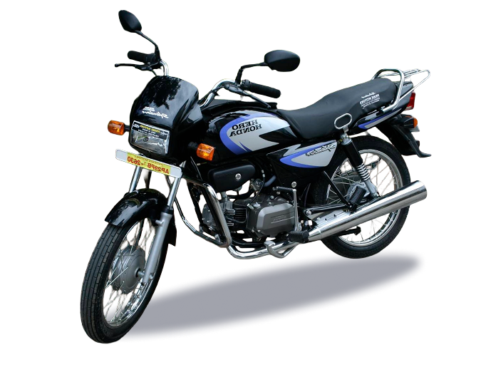
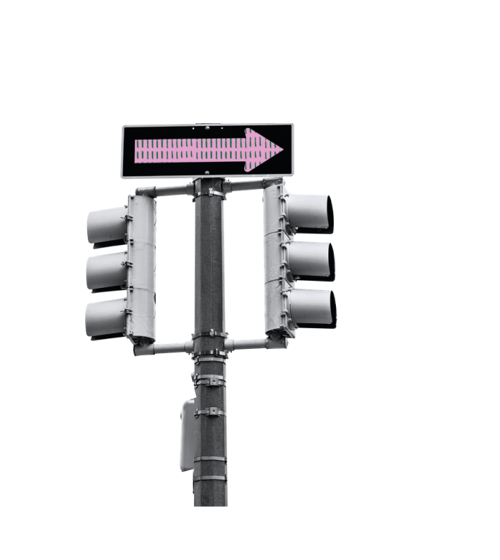
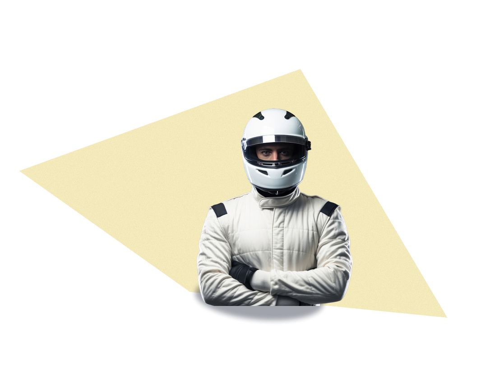

Yamaha worked with Escorts.
Honda with Firodia for scooters and...
with Hero MotoCorp for motorcycles.
Suzuki with TVS and Maruti.
Kawasaki with Bajaj in a technical partnership.
Indians who wanted personal transportation now had more options, but two-wheelers were still a luxury.






